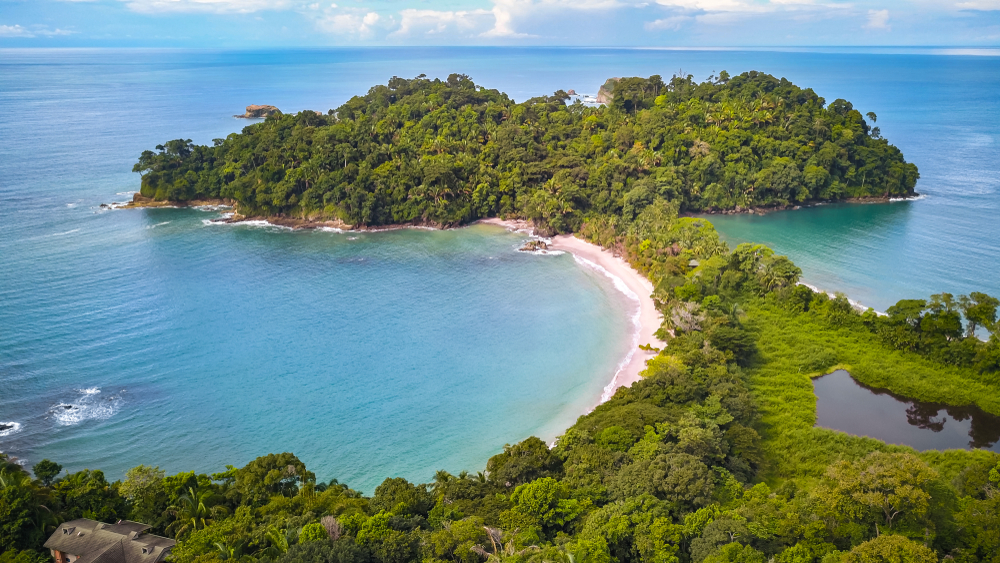
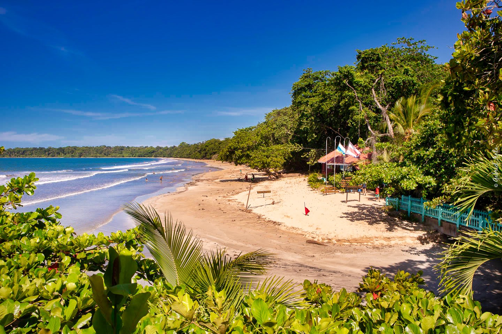

Bordeada por el Océano Pacífico y el Mar Caribe, Costa Rica ha atraído a turistas durante décadas con su rica biodiversidad y abundante vida silvestre. Aquí encontrarás hermosas playas, aguas cristalinas, escapadas tranquilas y deportes de aventura.
Playa Manuel Antonio
No es por nada que Manuel Antonio es tan mundialmente famoso. Este parque nacional abarca una gran área de reserva terrestre y marina. Para llegar hay que pagar la entrada al parque y caminar por sus senderos hasta llegar a la playa. En el camino se encontrará con una rica fauna y flora. Una vez que esté con los pies en la arena, mirando el agua azul y el bosque a su alrededor, ¡se sentirá agradecido de haber elegido estar allí!. Estar muy en el estado de ánimo de la naturaleza..

Imagen con fines ilustrativos Playa Cahuita
Explore el Parque Nacional Cahuita en la provincia de Limón en una caminata guiada. Conozca la historia del parque, que se encuentra en la costa sur del Caribe y fue fundado en 1970 para proteger los arrecifes de coral. Vea a los animales en su hábitat natural mientras viaja por uno de los parques nacionales más antiguos de Costa Rica. Además, visite las cascadas escondidas de Cahuita.

Playa Ocotal
Está orientado a la protección del medio ambiente y al turismo ecológico. Hay muchas actividades y excursiones para hacer en esta zona. Es costumbre que los residentes den largos paseos por la playa, y es fabulosa para nadar y bucear. La pesca deportiva es sin duda una de las ocupaciones favoritas en esta zona, ¡e incluso hay excursiones de pesca en playa Ocotal! Para los más aventureros, un viaje a la Isla Catalina ofrece un excelente buceo y es el mejor lugar para ver la mantarraya gigante.